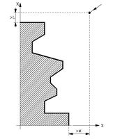

Consideraciones:

Las condiciones de mecanizado (velocidad de avance, velocidad de giro
de cabezal, etc.),deben programarse antes de la llamada al ciclo.
El punto de llamada al ciclo estará situado fuera de la pieza a
mecanizar y a una distancia superior a la definida como demasía para el
acabado (L, M) según los dos ejes (X, Z). Si la posición de la
herramienta no es correcta para ejecutar el ciclo, el CNC visualizará
el error correspondiente.
Una vez finalizado el ciclo fijo el avance activo será el último avance
programado, el correspondiente a la operación de desbaste (F) o acabado
(H). Asimismo, el CNC asumirá as funciones G00, G40 y G90.
{kind=link}
Ejemplo:
Se desea mecanizar en desbaste y acabado el perfil representado en el plano abajo. Para ello se usa el ciclo de desbaste por cilindrados G68.
{kind=link}
{kind=link}
| FAGOR G69 | FANUC G72 y G70 |
| G55 G00 X333 Z333 T01 D01 G92 S2220 G96 F0.33 S320 M04 ; OP-1 CILINDRADO A D196 N140 G40 G00 X196 Z4 M08 N150 G01 Z-25 N160 G91 X3 Z-1.5 ; OP-2 DESBASTE N170 G90 G00 X203 N180 Z4 G69 X196 Z-25 C2 L1 M0.2 S210 E290 G40 G00 X333 Z333 T03 D03 G92 S2500 G96 F0.18 S420 M04 ; OP-3 ACABADO G41 G01 X204 Z-29 N210 G01 X196 Z-25 X190 X160 Z-20 G03 X120 Z-15 R55 G01 X84 X80 Z-13 X60 G03 X50 Z-10 R8 G01 X40 Z-5 G39 R2 Z0 N290 X-2 G40 G00 X333 Z333 M30 |
N100 G50 S2220 N110 G00 G28 U0 W0 N120 T0101 N130 G96 F0.33 S320 M04 (OP-1 CILINDRADO A D196) N140 G40 G00 X196 Z4 M08 N150 G01 Z-25 N160 U3 W-1.5 (OP-2 DESBASTE) N170 G00 X203 N180 Z4 N190 G72 W1.5 R0.5 N200 G72 P210 Q310 U0.2 W1 N210 G00 X196 Z-25 N220 G01 X190 N230 X160 Z-20 N240 G03 X120 Z-15 R55 N250 G01 X84 N260 X80 Z-13 N270 X60 N280 G03 X50 Z-10 R8 N290 G01 X40 Z-5 N300 Z0 , C2 N310 X-2 N320 G00 G28 U0 W0 N330 T0303 N340 G96 F0.18 S420 M04 (OP-3 ACABADO) N350 G41 G00 X203 Z4 M08 N360 G70 P210 Q310 N370 G40 G00 G28 U0 W0 N380 M30 |